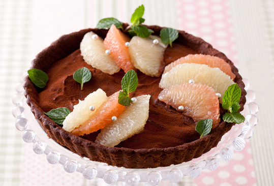

グレープフルーツとチョコのタルト
チョコレートのタルト生地にグレープフルーツを入れ、チョコレートガナッシュで固めます。上にもグレープフルーツを飾ってアラザンを散らし、大人っぽい色合いに。

| 材料 | 分量 |
|---|---|
| バター | 50g |
| 砂糖 | 大さじ2 |
| 卵黄 | 1個分 |
| A：薄力粉 | 50g |
| A：全粒粉 | 40g |
| A：ココアパウダー | 大さじ1 |
| 製菓用チョコレート（スイート） | 150g |
| 生クリーム | 70cc |
| グレープフルーツ（ホワイト） | 1個 |
| グレープフルーツ（ルビー） | 1個 |
| アラザン・ココアパウダー | 適量 |
■ 下準備
- ・バターは室温に戻す。
- ・チョコレートは細かく刻む。
- ・オーブンの予熱（190℃）
- ・型にバター（分量外）を薄く塗る。
 ボウルにバターを入れ、やわらかくなるまで泡立て器ですり混ぜる。砂糖・卵黄を加えて良く混ぜる。
ボウルにバターを入れ、やわらかくなるまで泡立て器ですり混ぜる。砂糖・卵黄を加えて良く混ぜる。
あわせたAをふるい入れ、ゴムベラで切るようにまぜる。粉気がなくなってきたら、手でひと塊りにまとめる。 ラップにはさみ、めん棒で直径20cm位に伸ばす。型に敷き込む。
ラップにはさみ、めん棒で直径20cm位に伸ばす。型に敷き込む。 フォークで底面に穴を3cm間隔位で全体に付け、190℃のオーブンで20分焼く。冷ます。
フォークで底面に穴を3cm間隔位で全体に付け、190℃のオーブンで20分焼く。冷ます。 鍋に生クリームを入れ沸騰直前まで温め、チョコレートを入れたボウルに注ぎ、そのまま少し置く。
鍋に生クリームを入れ沸騰直前まで温め、チョコレートを入れたボウルに注ぎ、そのまま少し置く。
チョコレートが溶けたら均一に混ぜる。 グレープフルーツは皮をむき、実を外す。半量を３に並べ、上から４を注ぎ入れ、冷蔵庫で冷やし固める（60分）。
グレープフルーツは皮をむき、実を外す。半量を３に並べ、上から４を注ぎ入れ、冷蔵庫で冷やし固める（60分）。- 冷やし固まったら、茶漉しでココアを振る。残りのグレープフルーツ・アラザンを飾り、お好みでミントの葉を添える。